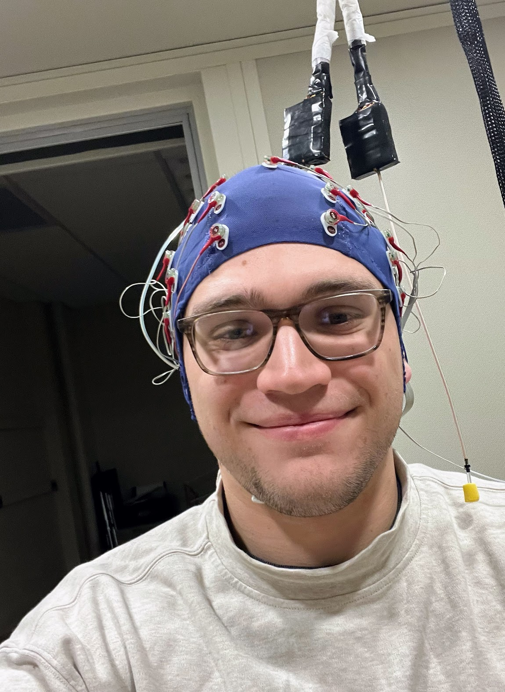

Hello, I'm Brady!
Recent graduate from the University of Minnesota Twin-Cities with a B.S. in Psychology.
Working as a researcher in the Auditory Perception and Cognition lab at U of M Twin-Cities!
Professional Documents
For details about my experience, view my Curriculum Vitae or Resume below.
Other Professional Involvement
Policy and Rights Lab
FellowAn independent non-partisan organization that exists to bridge the gap between academic human rights research and real policy impact. The lab is focused on rigorous independent analysis, which is vital to advancing human rights in the our new era of technology.